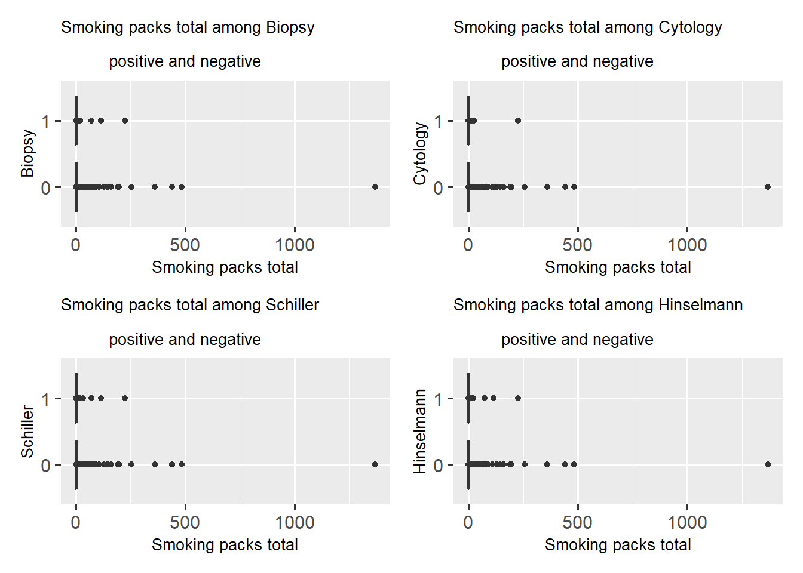

Chapter 4 Missing values
4.1 DataSet
In our data set of risk factors of cervical cancer, the missing values were original represented by question marks “?”. We will first replace those marks with NA and then extract the first 100 rows as our example for this frist draft.
4.2 Missing Values by Column
## STDs: Time since first diagnosis STDs: Time since last diagnosis
## 93 93
## IUD IUD (years)
## 7 7
## Num of pregnancies Hormonal Contraceptives
## 5 5
## Hormonal Contraceptives (years) STDs
## 5 5
## STDs (number) STDs:condylomatosis
## 5 5
## STDs:cervical condylomatosis STDs:vaginal condylomatosis
## 5 5
## STDs:vulvo-perineal condylomatosis STDs:syphilis
## 5 5
## STDs:pelvic inflammatory disease STDs:genital herpes
## 5 5
## STDs:molluscum contagiosum STDs:AIDS
## 5 5
## STDs:HIV STDs:Hepatitis B
## 5 5
## STDs:HPV Number of sexual partners
## 5 3
## First sexual intercourse Smokes
## 2 1
## Smokes (years) Smokes (packs/year)
## 1 1
## Age STDs: Number of diagnosis
## 0 0
## Dx:Cancer Dx:CIN
## 0 0
## Dx:HPV Dx
## 0 0
## Hinselmann Schiller
## 0 0
## Citology Biopsy
## 0 04.3 Missing Value Plots
Here is a missing value plots with heat map of the first 100 data rows.
## NOTE: The following pairs of variables appear to have the same missingness pattern.
## Please verify whether they are in fact logically distinct variables.
## [,1] [,2]
## [1,] "Sm" "S()"
## [2,] "Sm" "S(/"
## [3,] "S()" "S(/"
## [4,] "HC" "HC("
## [5,] "HC" "STDs"
## [6,] "HC" "ST("
## [7,] "HC" "STDs:cn"
## [8,] "HC" "STDs:cc"
## [9,] "HC" "STDs:vc"
## [10,] "HC" "STD:-c"
## [11,] "HC" "STDs:s"
## [12,] "HC" "Sid"
## [13,] "HC" "Sh"
## [14,] "HC" "STDs:mc"
## [15,] "HC" "STD:A"
## [16,] "HC" "STD:HI"
## [17,] "HC" "SB"
## [18,] "HC" "STD:HP"
## [19,] "HC(" "STDs"
## [20,] "HC(" "ST("
## [21,] "HC(" "STDs:cn"
## [22,] "HC(" "STDs:cc"
## [23,] "HC(" "STDs:vc"
## [24,] "HC(" "STD:-c"
## [25,] "HC(" "STDs:s"
## [26,] "HC(" "Sid"
## [27,] "HC(" "Sh"
## [28,] "HC(" "STDs:mc"
## [29,] "HC(" "STD:A"
## [30,] "HC(" "STD:HI"
## [31,] "HC(" "SB"
## [32,] "HC(" "STD:HP"
## [33,] "IU" "I("
## [34,] "STDs" "ST("
## [35,] "STDs" "STDs:cn"
## [36,] "STDs" "STDs:cc"
## [37,] "STDs" "STDs:vc"
## [38,] "STDs" "STD:-c"
## [39,] "STDs" "STDs:s"
## [40,] "STDs" "Sid"
## [41,] "STDs" "Sh"
## [42,] "STDs" "STDs:mc"
## [43,] "STDs" "STD:A"
## [44,] "STDs" "STD:HI"
## [45,] "STDs" "SB"
## [46,] "STDs" "STD:HP"
## [47,] "ST(" "STDs:cn"
## [48,] "ST(" "STDs:cc"
## [49,] "ST(" "STDs:vc"
## [50,] "ST(" "STD:-c"
## [51,] "ST(" "STDs:s"
## [52,] "ST(" "Sid"
## [53,] "ST(" "Sh"
## [54,] "ST(" "STDs:mc"
## [55,] "ST(" "STD:A"
## [56,] "ST(" "STD:HI"
## [57,] "ST(" "SB"
## [58,] "ST(" "STD:HP"
## [59,] "STDs:cn" "STDs:cc"
## [60,] "STDs:cn" "STDs:vc"
## [61,] "STDs:cn" "STD:-c"
## [62,] "STDs:cn" "STDs:s"
## [63,] "STDs:cn" "Sid"
## [64,] "STDs:cn" "Sh"
## [65,] "STDs:cn" "STDs:mc"
## [66,] "STDs:cn" "STD:A"
## [67,] "STDs:cn" "STD:HI"
## [68,] "STDs:cn" "SB"
## [69,] "STDs:cn" "STD:HP"
## [70,] "STDs:cc" "STDs:vc"
## [71,] "STDs:cc" "STD:-c"
## [72,] "STDs:cc" "STDs:s"
## [73,] "STDs:cc" "Sid"
## [74,] "STDs:cc" "Sh"
## [75,] "STDs:cc" "STDs:mc"
## [76,] "STDs:cc" "STD:A"
## [77,] "STDs:cc" "STD:HI"
## [78,] "STDs:cc" "SB"
## [79,] "STDs:cc" "STD:HP"
## [80,] "STDs:vc" "STD:-c"
## [81,] "STDs:vc" "STDs:s"
## [82,] "STDs:vc" "Sid"
## [83,] "STDs:vc" "Sh"
## [84,] "STDs:vc" "STDs:mc"
## [85,] "STDs:vc" "STD:A"
## [86,] "STDs:vc" "STD:HI"
## [87,] "STDs:vc" "SB"
## [88,] "STDs:vc" "STD:HP"
## [89,] "STD:-c" "STDs:s"
## [90,] "STD:-c" "Sid"
## [91,] "STD:-c" "Sh"
## [92,] "STD:-c" "STDs:mc"
## [93,] "STD:-c" "STD:A"
## [94,] "STD:-c" "STD:HI"
## [95,] "STD:-c" "SB"
## [96,] "STD:-c" "STD:HP"
## [97,] "STDs:s" "Sid"
## [98,] "STDs:s" "Sh"
## [99,] "STDs:s" "STDs:mc"
## [100,] "STDs:s" "STD:A"
## [101,] "STDs:s" "STD:HI"
## [102,] "STDs:s" "SB"
## [103,] "STDs:s" "STD:HP"
## [104,] "Sid" "Sh"
## [105,] "Sid" "STDs:mc"
## [106,] "Sid" "STD:A"
## [107,] "Sid" "STD:HI"
## [108,] "Sid" "SB"
## [109,] "Sid" "STD:HP"
## [110,] "Sh" "STDs:mc"
## [111,] "Sh" "STD:A"
## [112,] "Sh" "STD:HI"
## [113,] "Sh" "SB"
## [114,] "Sh" "STD:HP"
## [115,] "STDs:mc" "STD:A"
## [116,] "STDs:mc" "STD:HI"
## [117,] "STDs:mc" "SB"
## [118,] "STDs:mc" "STD:HP"
## [119,] "STD:A" "STD:HI"
## [120,] "STD:A" "SB"
## [121,] "STD:A" "STD:HP"
## [122,] "STD:HI" "SB"
## [123,] "STD:HI" "STD:HP"
## [124,] "SB" "STD:HP" Here is a missing value plots by variables of the first 100 data rows.
Here is a missing value plots by variables of the first 100 data rows.

4.4 Using Problem 2 missing value function

As shown by the graph, we can see that both columns of name STDs: Time since first diagnosis and STDs: Time since last diagnosis contains a high number of missing data. We might need to looking into these two columns and decide whether to keep them given this high volume of NAs. Other missing values takes up some portion of each column.